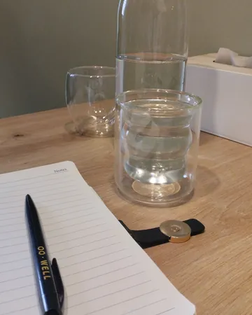
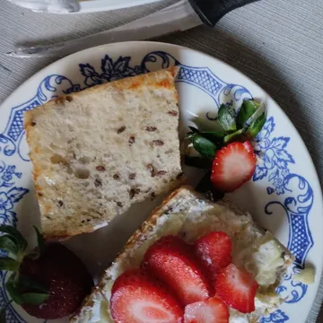

Если вы часто чувствуете тревогу, усталость, сухость, нехватку опоры
Journal
Здесь древние знания Ayurveda становятся частью современной жизни — эстетично, понятно и применимо каждый день.


Ayurveda: доши
Вата, Питта или Капха? В Ayurveda именно доша определяет, как мы чувствуем себя, восстанавливаемся, реагируем на стресс и даже как выглядит наша кожа.

Если вам свойственны напряжение, высокая чувствительность, стремление всё контролировать

Если вы сталкиваетесь с тяжестью, замедлением, ощущением, что энергии стало меньше
Первые статьи готовлю, загляните чуть позже.